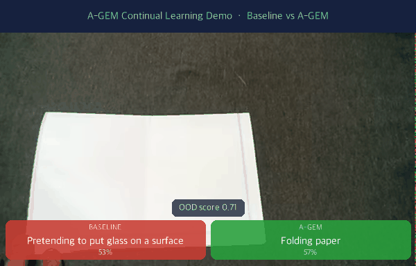

coad-mini
Continual-learning experiments for video action recognition on a 48-class subset of Something-Something V2.
Overview
This project compares a plain sequential baseline against replay-based methods (mainly A-GEM) with a CLIP + GRU pipeline:
video → frame sampling → CLIP embeddings → GRU classifier → staged continual-learning evaluation
Demo

Realtime captioning — Baseline (red) vs A-GEM (green), with a live OOD score. A-GEM recognizes actions the sequentially-trained baseline forgets.
Project highlights
- 48 classes organized as 8 stages × 6 classes
- Training/analysis scripts under
experiments/ - FastAPI demo app: realtime captioning, Baseline vs A-GEM inference
- Included checkpoints and mini subset manifests
Applications (built on the same pipeline)
- Realtime captioning — streaming per-window action prediction overlaid on video (
/predict_rt) - Few-shot enrollment — register a brand-new action class (48 → 48+K) via A-GEM replay, without catastrophic forgetting (
/enroll) — docs - Anomaly / OOD detection — flag out-of-distribution / low-confidence actions on the stream (
/predict_anomaly) — docs
Key finding — what actually moves the needle
After A-GEM converged, we searched for the next bottleneck across model capacity, feature backbone, temporal architecture, and data scale. The dominant lever turned out to be data quantity, not architecture.
- GRU capacity / memory strategy → no gain
- Backbone CLIP B/32 → OpenCLIP L/14 → only +0.01–0.026 (vanishes at full data)
- GRU + Attention → worse (−0.103 acc, forgetting +0.240)
- Data 25% → 100% → +0.06–0.07 (curves still rising)
Conclusion: a simple GRU + A-GEM is the robust optimum; scale data, not architecture. See data-scale study and GRU+Attention result.
📓 연구 일지 (Research Log)
실험 설계부터 최종 결과까지, 코드에 담기지 않은 의사결정 과정을 기록한 문서입니다.
OrthGrad 가설 → 실패 분석 → A-GEM 전환 → Class Scaling → Memory Ablation → Replay Ratio / Selection 심층 분석 → Backbone / Architecture / Data Scale sweep
Repository
Source code and usage instructions are available on GitHub.